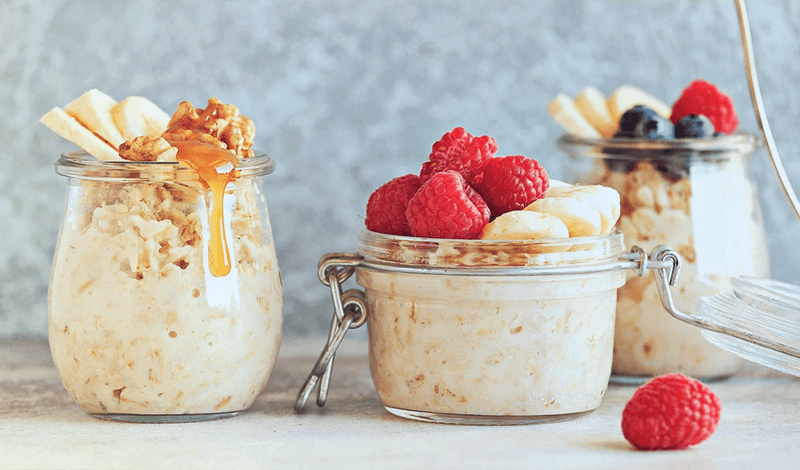

Avena Trasnochada

La avena trasnochada es una receta saludable y fácil de preparar que consiste en mezclar avena, leche (o una alternativa vegetal), y tus ingredientes favoritos.
La mezcla se deja reposar en el refrigerador durante la noche, lo que permite que la avena absorba los líquidos y adquiera una textura suave y cremosa, lista para disfrutar al día siguiente
Ingredientes
- 3 cucharadas de avena
- Leche (vegetal o animal)
- Azucar al gusto
- Frutas al gusto (opcional)
- Canela en polvo al gusto (opcional)
Procedmiento
- En una olla calentar la leche a fuego medio hasta que este tibia (No muy caliente ni muy fria)
- Añadir la avena junto al azucar y revolver constantemente durante 10 minutos
- Bajar del fuego y esperar a que se enfrie
- En la misma olla o en un recipiente tapar la avena y guradar en la nevera durante toda la noche
- Pasada la noche, abrir la avena y agregar frutas y canela al gusto
- ¡Disfrutar!